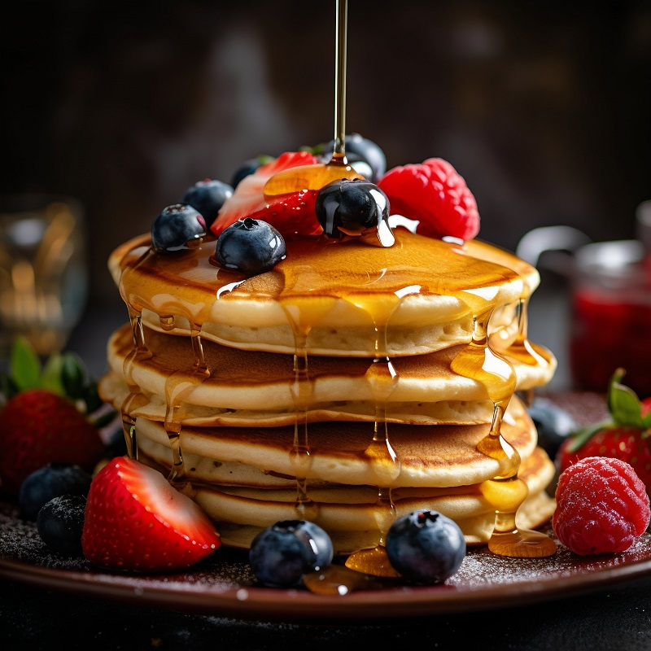

Fluffy Pancakes

Description:
These Fluffy Pancakes are the ultimate breakfast treat, offering a light and airy texture that melts in your mouth. The secret lies in the combination of baking powder, which acts as a leavening agent, and the gentle mixing of the batter to keep it light.
The hint of vanilla adds a lovely aroma, making each bite delightful. Golden brown and delicious, these pancakes are perfect for a lazy Sunday morning or any day you want to start with a smile.
Customize them with your favorite toppings, whether you prefer the classic maple syrup and butter or a more adventurous mix of fruits and nuts.
Ingredients:
- 1 1/2 cups all-purpose flour
- 3 1/2 teaspoons baking powder
- 1 teaspoon salt
- 1 tablespoon white sugar
- 1 1/4 cups milk
- 1 egg
- 3 tablespoons unsalted butter, melted
- 1 teaspoon vanilla extract (optional)
- extra butter or oil for cooking
Instructions:
- Prepare the Batter:
- In a large mixing bowl, sift together the flour, baking powder, salt, and sugar.
- Make a well in the center and pour in the milk, egg, melted butter, and vanilla extract (if using).
- Mix until smooth. Be careful not to overmix; a few lumps are fine.
- Heat the Griddle:
- Heat a lightly oiled griddle or frying pan over medium-high heat.
- You can test if it's ready by sprinkling a few drops of water on the surface; they should sizzle.
- Cook the Pancakes:
- Pour or scoop the batter onto the griddle, using approximately 1/4 cup for each pancake.
- Cook until bubbles form on the surface of the pancakes and the edges look set, about 2-3 minutes.
- Flip with a spatula, and cook until browned on the other side, about 2 minutes more.
- Serve:
- Serve warm with your favorite toppings like maple syrup, fresh fruit, whipped cream, or even a dollop of yogurt.
Home